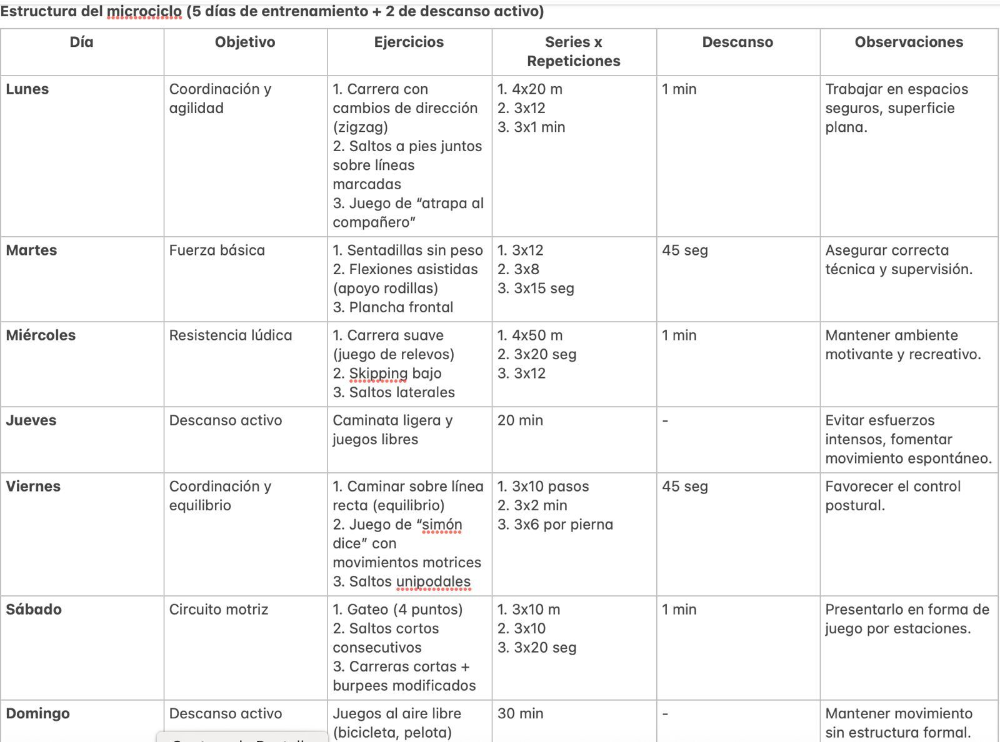
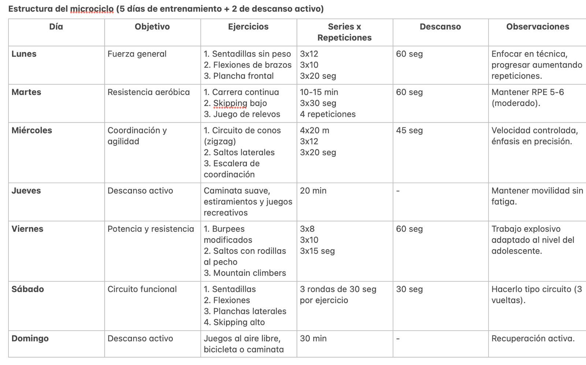
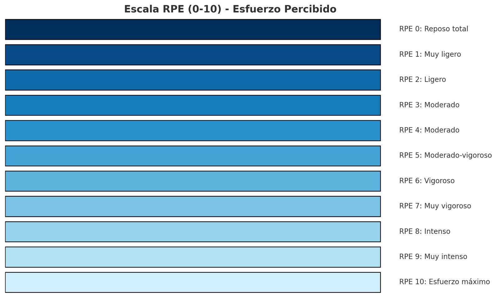

📘 Tipos de Entrenamiento
1. Entrenamiento de Resistencia
- Aeróbico continuo: Ritmo constante y moderado durante períodos prolongados (ej., trote, ciclismo).
- Intervalos (HIIT): Alterna esfuerzos de alta intensidad con descansos activos.
- Resistencia muscular: Uso de pesos ligeros con altas repeticiones para aumentar la capacidad muscular prolongada.
2. Entrenamiento de Fuerza
- Máxima: Cargas altas (80-100% 1RM) con pocas repeticiones para aumentar fuerza absoluta.
- Hipertrofia: Aumento del tamaño muscular con cargas moderadas (70-80% 1RM, 8-12 repeticiones).
- Resistencia: Cargas ligeras a moderadas (50-70% 1RM) con altas repeticiones (12-20).
3. Entrenamiento de Potencia
- Pliometría: Saltos y movimientos explosivos para mejorar fuerza reactiva.
- Levantamientos olímpicos: Movimientos rápidos como snatch y clean & jerk para fuerza explosiva.
4. Entrenamiento de Velocidad y Agilidad
- Sprints: Alta velocidad en distancias cortas.
- Drills de agilidad: Movimientos rápidos con cambios de dirección (escaleras de coordinación, conos).
5. Entrenamiento Concurrente
- Combina fuerza y resistencia en un mismo programa, como en CrossFit.
6. Entrenamiento Funcional
- Movimientos básicos y naturales para mejorar el desempeño diario (sentadillas, empujes).
7. Entrenamiento de Movilidad y Flexibilidad
- Estiramientos dinámicos y estáticos, yoga y ejercicios de movilidad articular.
⚙️ Principios del Entrenamiento
- 1. Especificidad: El entrenamiento debe enfocarse en las demandas específicas del deporte o actividad (ej., fuerza explosiva para levantadores olímpicos).
- 2. Sobrecarga: Incrementar progresivamente la intensidad o el volumen para estimular adaptaciones.
- 3. Progresión: Avanzar de manera gradual en intensidad, volumen o complejidad para evitar estancamiento y reducir el riesgo de lesiones.
- 4. Individualización: Adaptar el entrenamiento a las características, capacidades y objetivos de cada persona.
- 5. Variabilidad: Introducir cambios en el tipo de entrenamiento, ejercicios o métodos para evitar la monotonía y el estancamiento.
- 6. Reversibilidad: Las adaptaciones se pierden si el entrenamiento cesa; es importante mantener una rutina regular.
- 7. Continuidad: Mantener la frecuencia del entrenamiento para fomentar adaptaciones sostenibles.
- 8. Interdependencia volumen-intensidad: A medida que aumenta la intensidad, debe reducirse el volumen para evitar sobrecarga y lesiones.
👦 Niños 10-11 Años
🎨Estructura del Microciclo

🎯 Objetivos del microciclo
- Mejorar coordinación y agilidad.
- Desarrollar fuerza general de manera funcional y segura.
- Fomentar la resistencia aeróbica mediante juegos activos.
- Promover hábitos de actividad física divertida y segura.
✅ Recomendaciones
- Duración de cada sesión: 30-40 minutos.
- Intensidad: Moderada, controlada por el disfrute y sin fatiga excesiva.
- Progresión: Incrementar repeticiones de manera gradual (1-2 cada semana).
- Supervisión: Un adulto debe vigilar y guiar la técnica en cada ejercicio.
- Enfoque lúdico: Convertir los ejercicios en juegos para mantener la motivación.
🎯 Objetivos del microciclo
- Mejorar coordinación y agilidad.
- Desarrollar fuerza general de manera funcional y segura.
- Fomentar la resistencia aeróbica mediante juegos activos.
- Promover hábitos de actividad física divertida y segura.
✅ Recomendaciones
- Duración de cada sesión: 30-40 minutos.
- Intensidad: Moderada, controlada por el disfrute y sin fatiga excesiva.
- Progresión: Incrementar repeticiones de manera gradual (1-2 cada semana).
- Supervisión: Un adulto debe vigilar y guiar la técnica en cada ejercicio.
- Enfoque lúdico: Convertir los ejercicios en juegos para mantener la motivación.
🧒 Adolescentes 12-17 Años
🎨Estructura del Microciclo

🎯 Objetivos del microciclo
- Mejorar resistencia cardiovascular y fuerza general.
- Desarrollar coordinación, agilidad y potencia de forma progresiva.
- Prevenir lesiones mediante trabajo de movilidad y técnica.
- Promover hábitos de ejercicio regulares y seguros.
✅ Recomendaciones
- Duración de la sesión: 40-50 minutos.
- Intensidad: Moderada a vigorosa (RPE 5-7).
- Progresión: Aumentar repeticiones o duración 5-10% cada 2 semanas.
- Seguridad: Supervisar técnica para prevenir lesiones.
- Variedad: Combinar ejercicios lúdicos y funcionales para motivar.
🎯 Objetivos del microciclo
- Mejorar resistencia cardiovascular y fuerza general.
- Desarrollar coordinación, agilidad y potencia de forma progresiva.
- Prevenir lesiones mediante trabajo de movilidad y técnica.
- Promover hábitos de ejercicio regulares y seguros.
✅ Recomendaciones
- Duración de la sesión: 40-50 minutos.
- Intensidad: Moderada a vigorosa (RPE 5-7).
- Progresión: Aumentar repeticiones o duración 5-10% cada 2 semanas.
- Seguridad: Supervisar técnica para prevenir lesiones.
- Variedad: Combinar ejercicios lúdicos y funcionales para motivar.
🧑 Jóvenes y Adultos 18-64 Años
| Población | RPE Recomendado | Descripción del Esfuerzo | Aplicación Práctica |
|---|---|---|---|
| Niños 10-11 años | 3-6 | Moderado a vigaroso, ejercicios tipo juego | Juegos activos, carreras cortas, circuitos lúdicos |
| Adolescentes 12-17 años | 4-7 | Moderado a vigoroso, con ejercicios controlados y técnica supervisada | Entrenamiento funcional, HIIT adaptado, deportes escolares |
| Jóvenes y Adultos 18-64 años | 5-8 | Moderado a intenso y vigoroso, según objetivo y enfoque en salud | Fuerza, crossFit, cardio interválico, deportes, circuitos de fuerza, resistencia aeróbica, movilidad |
| Adultos Mayores 65+ | 3-6 | Ligero a moderado priorizando seguridad y control técnico | Caminatas, fuerza funcional, equilibrio, movilidad |
🎨Escala RPE (0-10) Esfuerzo Percibido

📌 Nota:
- RPE (Escala de Percepción del Esfuerzo) es una herramienta para evaluar la intensidad del ejercicio.
- Un RPE más bajo significa menor esfuerzo, mientras que un RPE más alto indica mayor esfuerzo.
- El rango recomendado es una guía para ajustar la intensidad de los ejercicios según la población.
📌 Nota:
- RPE (Escala de Percepción del Esfuerzo) es una herramienta para evaluar la intensidad del ejercicio.
- Un RPE más bajo significa menor esfuerzo, mientras que un RPE más alto indica mayor esfuerzo.
- El rango recomendado es una guía para ajustar la intensidad de los ejercicios según la población.